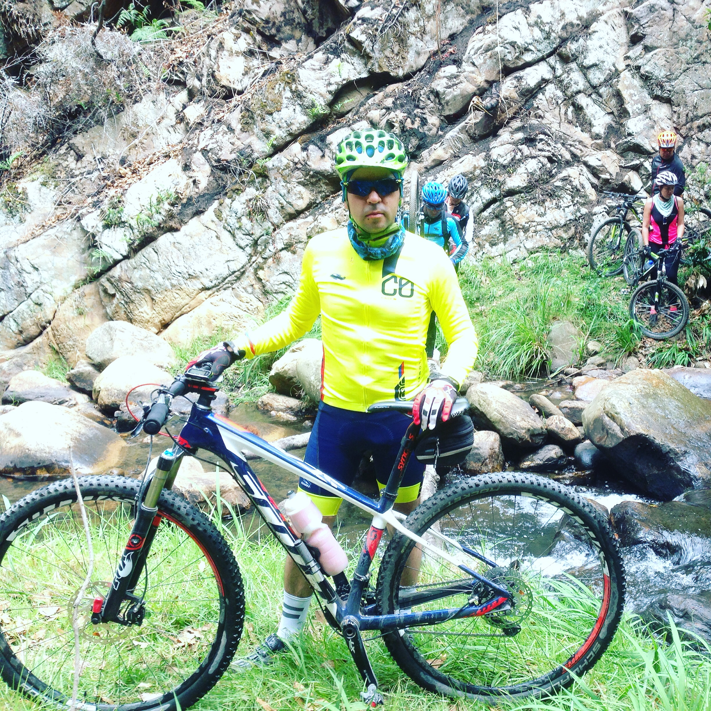
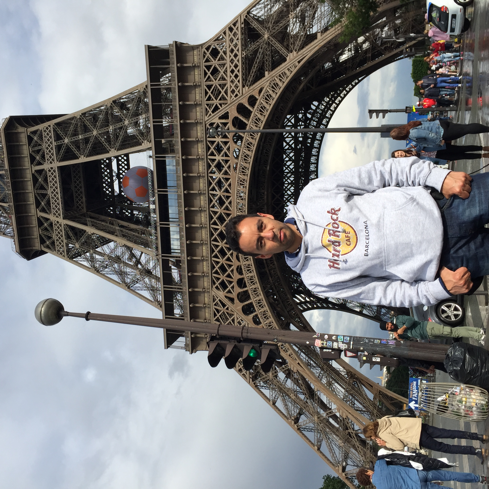
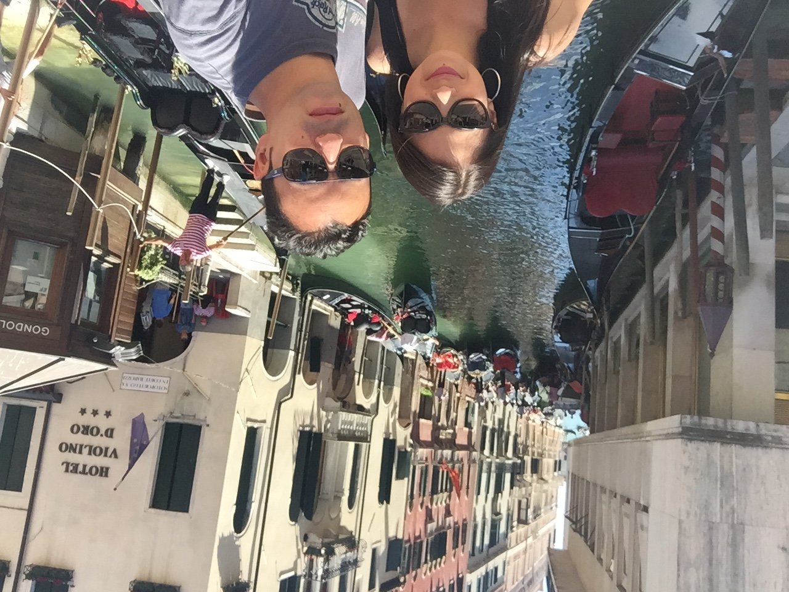
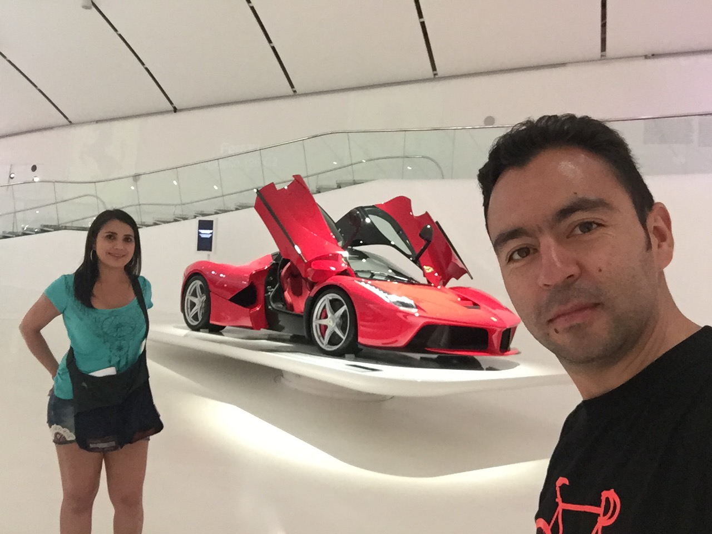

About Me

My name is Juan Alberto Hernandez. Born and grew up in Tunja, a small city near Bogotá Colombia. Living in Winnipeg since December of 2021, came with my family that is compound of my wife and my 2 years old son called salomón. I am a Mechanical Engineer, with more than 8 years of expertise managing teams of workers in the industry of construction and also leading sales groups in the commercial fields. I have got a Master’s in business administration.


Based on my background and also helped for my passion for reading topics about technology and global trends, I have kept myself informed how almost everything around the lives of people has to be connected to the digital world.
The automatization of some labours is replacing some repetitive jobs, at the same time, there are new types of jobs emerging and continually expanding, which are all related to the development and services to the cyberspace.
Having in mind all I did in my last jobs, with my constant research to be prepared for the new tendencies of technology, and helped of my interest in using computers and other devices, I decided to start a software developer program, to gain expertise in all the skills to create web and mobile applications to make people´s lives easier and finally to have an update in my career.
I love cycling, a couple of years ago I used to do 2 hours of workout 3 or 4 times per week. I am looking forward to the spring season to buy a new bicycle and ride in the trails of Winnipeg.
I enjoy travelling around the world, at the moment I know around 18 countries, my goal is to go to at least 50 countries before my 60th birthday.
 
Every day I find a way to read tech blogs and news related to business, the world economy, motorsports and new trends of the automotive industry. In my leisure time, I prefer to stay with my family watching tv series or movies associated with stories of real life.
